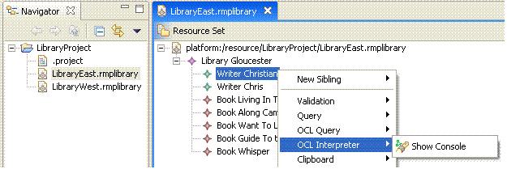
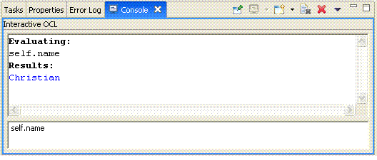

This example describes the usage of OCL expressions used to implement OCL queries and constraints within the SDK. It demonstrates how to author OCL expressions and evaluate them against the library model elements.
Please refer to the document Object Constraint Language Examples Overview for reviewing the library meta-model used as the basis for demonstrating the capabilities in this example.
This example plug-in is named org.eclipse.emf.ocl.examples.interpreter.
This plug-in contributes the OCL Interpreter menu to the library
editor's main menu and context menu. The menu has one item:
Please refer to the tutorial OCL Interpreter Tutorial for reviewing the code samples within this example.
The bottom field in the console accepts OCL expressions (comments supported). You can press Enter to evaluate on the currently selected element. You can press Ctrl+Enter or Shift+Enter to insert a newline. The top field shows the output and errors. The console can be cleared by the Eraser button and closed by the X button.
Refer to this example if you need:
Copyright (c) 2000,2005 IBM Corporation and others. All Rights Reserved.